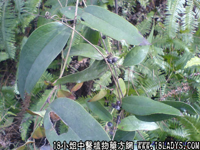

别名：硬饭头。
植物名：光菝葜。
生长环境：本品为多年生，攀援状灌木。生于市郊丘陵地、山坡、山腰、林缘半荫地。
分布：印度至我国东南部，广州近郊有野生。
入药部分：根。
采集期：全年采根。
自采地点：大山。
性味：性微凉、味甘淡。
功能：解毒利水、去湿毒。
主治、用量和用法：1、皮肤热毒：干用1至4两，或生用4两至1斤，清水煎服；2、梅毒、疔毒：生用1至2斤，金钱龟1只，清水15碗，煎成2碗，加白糖适量调服。
验方：（治花柳骨痛、皮肤湿毒方）生土茯苓1斤、干谷木根2两、土银花5钱、生蒲公英1两、清水十碗，煎成一碗半，热服。
（方解）土茯苓去湿解毒，治梅毒，民间有长久经验，最常用方法为土茯苓、金钱龟熬成胶，食时加糖调味。本方谷木根亦有治梅毒作用，土银花、蒲公英清热解毒，治皮肤热疮最长，凡风热湿毒均可用之。
（方歌）花柳骨痛疔毒成，土银花语土茯苓，生蒲公英谷木蔃，金龟熬胶效更灵。
参考资料：《湖南中医单方验方第二集》验方：治梅毒：土茯苓切片2斤、金银花10两、黄柏2两、甘草2两、猪油半斤、慢火煎熬成膏状，每日服三次，十日服完，效果好，无副作用。